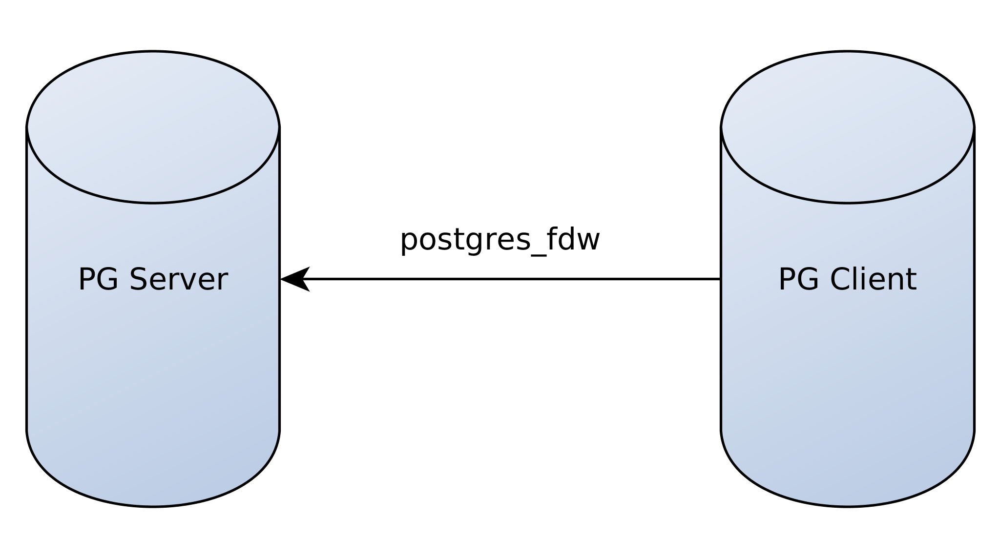
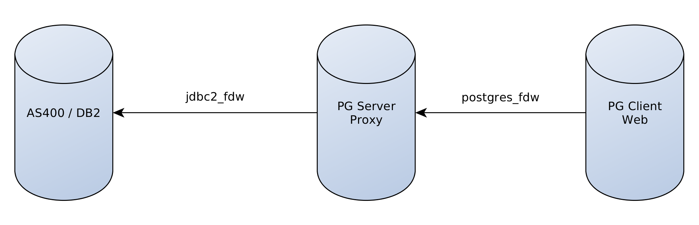
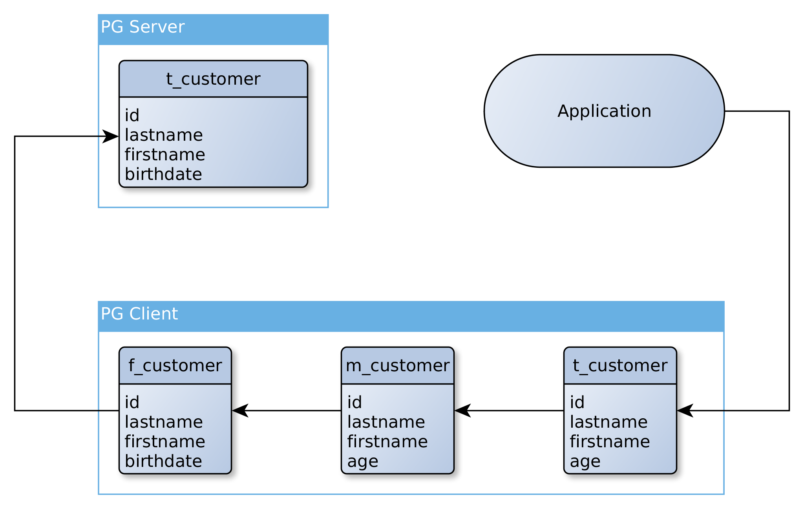
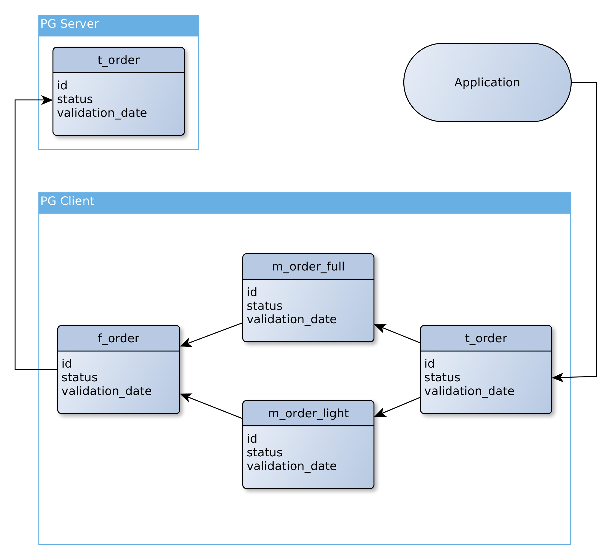

Foreign Data Wrapper
kézako ?

PostgreSQL
Historique
1974 : Création d'Ingres
1985 : Refonte de zéro d'Ingres pour créer postgres
1995 : Ajout des fonctionnalités SQL => Postgres 95
1996 : Renommage en PostgreSQL
2016 : Version 9.6
2017 : Version 10.0
2018 : Version 11.0
2019 : Version 12.0
Fonctionnalités générales
- SGBDRO
- Accessible : JDBC, pgsql, ...
-
SQL :
- Triggers
- Common Table Expressions
- Procedural Language (PL/pgSQL, PL/JAVA, PL/PHP, ...)
- Vues et Vues matérialisées
- ...
- JSON
- PostGIS
- ...
- Foreign Data Wrapper
Foreign Data Wrapper
Qu'est-ce que c'est ?
Norme SQL/MED (Management of External Data)
Créée en 2003
Création de wrapper :
- Nativement en C
- En python avec "Multicorn"
- En ruby avec "Holycorn"
Quelques Wrappers
PostgreSQL
SGBD SQL courants : MySQL, Oracle, SQL Server, SQLite, ...
Connecteurs SQL génériques : ODBC, JDBC
NoSQL : ElasticSearch, MongoDB, Cassandra, Redis, ...
Big Data : Hadoop, ...
CSV, XML, LDAP
Git, Logs, WWW, IMAP
Processus, Twitter, Docker, RabbitMQ, ...
Évolution (1/3)
07/2009 : v8.4
Démarrage de l'implémentation du SQL/MED
09/2011 : v9.1
Arrivée des "Foreign Tables"
09/2013 : v9.3
Ajout de l'écriture sur les Foreign Tables
10/2014 : v9.4
Ajout des triggers sur les Foreign Tables
Évolution (2/3)
01/2016 : v9.5
IMPORT FOREIGN SCHEMA
INSERT ... ON CONFLICT DO NOTHING/UPDATE
09/2016 : v9.6
JOIN et SORT directement sur le serveur distant
De même pour les UPDATE et les DELETE
Exécution d'opérateurs et de fonction sur le serveur distant
Possibilité d'annuler une requête distante
Èvolution (3/3)
10/2017 : v10.0
Utilisation de fonctions d'aggragations à distance quand c'est possible.
10/2019 : v12.0
Utilisation des instructions ORDER BY et LIMIT à distance.
Cas d'utilisation
Client/Server
Comment ça marche ?
Déclaration de l'extension
CREATE EXTENSION postgres_fdw;
Déclaration du serveur distant
CREATE SERVER nom_remote
FOREIGN DATA WRAPPER postgres_fdw
OPTIONS (
host 'remote.url.lan',
dbname 'ma_db'
);
Mapping utilisateur
CREATE USER MAPPING FOR mon_local_user
SERVER mon_remote
OPTIONS (
user 'mon_remote_user',
password 'mon_remote_passwd'
);
Création d'une table distante
CREATE FOREIGN TABLE table_locale_mais_distante (
id INTEGER,
col1 VARCHAR(32),
col2 BOOLEAN
)
SERVER mon_remote
OPTIONS (
table_name 'le_nom_de_ma_table',
updatable 'false'
);
Utilisation
SELECT id, col1
FROM table_locale_mais_distante
WHERE col2 IS TRUE
ORDER BY col1;
Encore plus facile
IMPORT FOREIGN SCHEMA schema_distant
FROM SERVER mon_remote
INTO mon_schema_local;
Exemple
Tables sur server
server=# \d
Liste des relations
Schéma | Nom | Type | Propriétaire
--------+-----------------+----------+--------------
public | country | table | user
public | country_id_seq | séquence | user
public | customer | table | user
public | customer_id_seq | séquence | user
(4 lignes)
Table sur le server
server=# \d country
Table « public.country »
Colonne | Type | Modificateurs
---------+-----------------------+---------------
id | integer | non NULL
alpha2 | character(2) | non NULL
alpha3 | character(3) | non NULL
label | character varying(64) | non NULL
Index :
"country_pkey" PRIMARY KEY, btree (id)
Table sur le server
server=# SELECT count(id) FROM country;
count
-------
241
(1 ligne)
server=# SELECT id, alpha2, alpha3, label
FROM public.country
WHERE alpha2 = 'FR';
id | alpha2 | alpha3 | label
----+--------+--------+--------
75 | FR | FRA | France
(1 ligne)
Tables sur le client
client=# \d
Liste des relations
Schéma | Nom | Type | Propriétaire
--------+------------+------------------+--------------
public | f_country | table distante | user
public | f_customer | table distante | user
public | m_customer | vue matérialisée | user
public | t_customer | vue matérialisée | user
public | u_country | table distante | user
(5 lignes)
Table sur le client
client=# \d f_country
Table distante « public.f_country »
Colonne | Type | Modificateurs | Options FDW
---------+-----------------------+---------------+-------------
id | integer | |
alpha2 | character(2) | |
alpha3 | character(3) | |
label | character varying(64) | |
Server: server
FDW Options: (
schema_name 'public',
table_name 'country',
updatable 'false')
Table sur le client
client=# SELECT count(id) FROM f_country;
count
-------
241
(1 ligne)
client=# SELECT id, alpha2, alpha3, label
FROM public.f_country
WHERE alpha2 = 'FR';
id | alpha2 | alpha3 | label
----+--------+--------+--------
75 | FR | FRA | France
(1 ligne)
Vue matérialisée
Mélange entre une vue et une table
CREATE MATERIALIZED VIEW m_customer AS
SELECT id, lastname, firstname,
date_part('year', age(birthdate)) as age
FROM f_customer
WITH NO DATA;
CREATE INDEX m_customer_keys
ON m_customer (id);
REFRESH MATERIALIZED VIEW m_customer;
server=# SELECT id, lastname, firstname, birthdate
FROM customer LIMIT 2;
id | lastname | firstname | birthdate
----+----------+-----------+------------
1 | Potter | Harry | 1980-08-31
2 | Weasley | Ron | 1980-03-01
(2 lignes)
client=# SELECT id, lastname, firstname, age
FROM m_customer LIMIT 2;
id | lastname | firstname | age
----+----------+-----------+-----
1 | Potter | Harry | 39
2 | Weasley | Ron | 39
(2 lignes)
Cas pratique
Besoin
Application Web
IBM AS400/DB2
Driver PHP
JDBC
jdbc2_fdw
Explication
Rafraichissement du proxy
CREATE FOREIGN TABLE f_ma_table (...) SERVER server OPTIONS (...);
CREATE MATERIALIZED VIEW m_ma_table AS
SELECT ... FROM f_ma_table;
CREATE FUNCTION refresh_view(name) RETURNS INTEGER AS $$
BEGIN
EXECUTE format('REFRESH MATERIALIZED VIEW %s', name);
RETURN 1;
END;
$$ LANGUAGE 'plpgsql';
CREATE VIEW refresh_ma_table AS SELECT refresh_view('m_ma_table');
Problème 1
Comment rafraichir mes données sans bloquer mon application ?
Solution 1
Deux vues matérialisées
La première sur la table distante
La seconde sur la première vue mat
Solution 1
Solution 1
CREATE MATERIALIZED VIEW t_customer AS
SELECT * FROM m_customer
WITH NO DATA;
CREATE INDEX t_customer_keys
ON t_customer (id);
Problème 2
Comment rafraichir régulièrement des données très volumineuses ?
Solution 2
Découpage en 2 vues :
Une première qui contient toutes les données
Une seconde qui contient qu'un fragment des données
Une 3ème vue qui JOIN le tout
Solution 2
Git FDW
Déclaration du serveur
CREATE EXTENSION multicorn;
CREATE SERVER git_server
FOREIGN DATA WRAPPER multicorn
OPTIONS (
wrapper 'multicorn.gitfdw.GitFdw'
);
Déclaration de la table
CREATE FOREIGN TABLE git_atoum (
author_name VARCHAR(128),
author_email VARCHAR(128),
message TEXT,
hash VARCHAR(128),
date TIMESTAMP
)
SERVER git_server
OPTIONS (
path '/opt/atoum'
);
SELECT
SELECT to_char(date, 'YYYY-TQ') AS quarter,
COUNT(*) as nb_commit
FROM git_atoum
GROUP BY to_char(date, 'YYYY-TQ')
ORDER BY quarter ASC;
Résultat
quarter | nb_commit ---------+----------- 2010-T2 | 25 2010-T3 | 64 2010-T4 | 108 2011-T1 | 144 2011-T2 | 199 2011-T3 | 230 2011-T4 | 174 2012-T1 | 89 2012-T2 | 137 2012-T3 | 150 2012-T4 | 184 2013-T1 | 215 2013-T2 | 234 2013-T3 | 119 2013-T4 | 217 2014-T1 | 108 2014-T2 | 29 2014-T3 | 26 2014-T4 | 110
quarter | nb_commit ---------+----------- 2015-T1 | 58 2015-T2 | 46 2015-T3 | 65 2015-T4 | 75 2016-T1 | 85 2016-T2 | 27 2016-T3 | 43 2016-T4 | 46 2017-T1 | 46 2017-T2 | 19 2017-T3 | 31 2017-T4 | 35 2018-T1 | 10 2018-T4 | 2 2019-T1 | 1 2019-T2 | 6 2019-T3 | 1 2019-T4 | 11 2020-T1 | 3 (38 rows) Time: 63.959 ms
Graph (requête)
SELECT to_json(t)
FROM (
SELECT array_agg(data.quarter) AS labels,
array_agg(data.nb_commit) AS data
FROM (
SELECT to_char(date, 'YYYY-TQ') AS quarter,
COUNT(*) as nb_commit
FROM git_atoum
GROUP BY to_char(date, 'YYYY-TQ')
ORDER BY quarter ASC
) AS data
) AS t;
Graph (resultat)
Documentation
Page des Foreign Data Wrappers
Postgresql : la nouvelle base orientée document par Yan Bonnel (Vidéos)